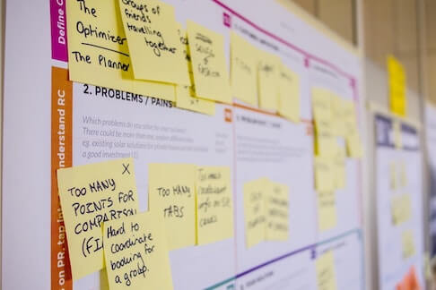
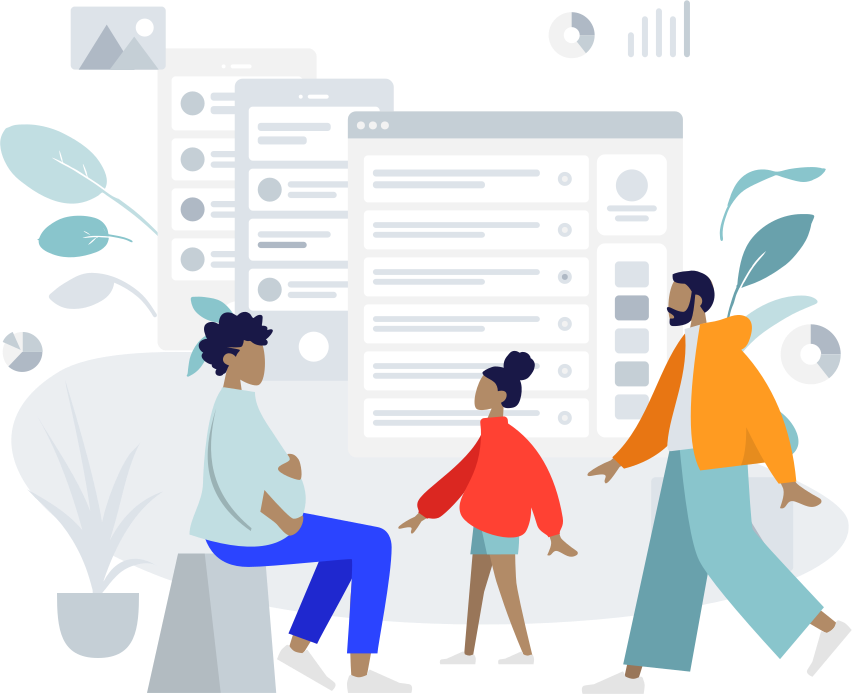

FAMILY TRAVEL
Research, organize, and collaborate while planning family vacations
Families with young children want to enjoy relaxing vacations. They are often busy
and feel stressed with the planning and packing components of travel.
Parents use a variety of methods for researching and planning. Bouncing between research sites, consulting with friends, and coordinating schedules to organize a child-centered itinerary can be daunting.
Family Travel helps users seamlessly review their friends and family's past itineraries in order to book travel along their route. They can also browse family-friendly activities, well-reviewed accommodations, and accessible attractions all in one platform.
HIGH-LEVEL TIMELINE
KEY GOAL
4 weeks from user research to mid-fi prototype
Understand how parents plan family vacations.
Product Designer, User Research, Product Strategy, Prototyping & Testing
Family Travel is my first UX project at the UC Berkeley Extension UX/UI Bootcamp. My partner and I wanted to focus on helping families prepare for travel. Since I am transitioning out of my role as an elementary classroom teacher, I have experienced first-hand user frustrations and pain points. Instead of complaining about issues, I strive to ideate and develop solutions!
-

×
-
- Turned an idea into a product.
The ability to transform an idea into something more tangible is an exciting and rewarding task. While this product is still in the development stage, our team was able to learn key user insights and strive to help them.
Juggled many different hats.As one of two team members, I utilized all my spare time and weekends conducting research, sketching, testing, and design the product alongside my normal day job.
UNDERSTANDING THE NEED
Families with young children are very busy and usually stressed with the planning and packing components of travel. They engage in extensive travel research using a variety of apps and rely on their friends and family for recommendations while planning. All travel activities are child-centered, and methods of travel include flying, driving, and cruises.

To understand the current product landscape, we conducted a competitor analysis of other travel planning apps.
Our strategy was to see how other travel apps suggest family-friendly activities and accommodations.
We found that there were no apps that allowed users to search for activities, accommodation, travel, and create an itinerary on one platform.
How will I solve my users' needs?
A storyboard helps us to identify key moments a parent experiences while planning a family vacation. It helped us ideate potential screens we would need to design for the Family Travel mobile app.
The storyboard helped us establish a shared vision and revealed issues and key screens early in the development process.

Based on the storyboard, we identified our main parent in the story. We used proto-personas to help us stay anchored on the user and avoid letting our desire for features trump user needs.
For each persona, we identified the key tasks as well as their emotional state at each stage of the journey.
Userflows helped us identify key actions Stephanie would take within the app and the screens to focus on first.
Since we learned that parents trust recommendations from their friends and family, we wanted to have Stephanie start by reviewing itineraries her
friends have shared. She could customize her own family’s trip by making a copy. Stephanie could then search for family-friendly activities along
her route by location. She can share her itinerary with friends and feel accomplished.
Since the research, planning, and finalized itinerary all occurred within the Family Travel app, she can also feed accomplished that her plans are
all in one place. We next need to consider how she could access and edit her itinerary offline. While traveling, she may not have reliable internet access.
EXPLORING DESIGN SOLUTIONS
Low-fidelity wireframes
We wanted users like Stephanie to quickly learn how to use the app, so they have the option of skipping the onboarding process. In order to access
social media and save itineraries, users need to create an account or login. The app will remember them after the register.
Once users land on the homepage, they can choose to peruse their friends’ itineraries, chat with friends, or view friends’ or their own profile.
We would eventually like to offer a function to save profile settings. When the user searches and creates a new itinerary in the future, the settings
will tailor results. Users like Stephanie can copy a friend’s itinerary to customize. They can search, customize, and save their own itineraries in the
app. All itineraries can be accessed via the app.
At this phase of the design process, early user feedback is crucial to eliminate pain points and enhance usability and existing features.
Early sketches exploring the flow users would take to customize their own itinerary.
Run off table persian cat jump eat fish. Plan steps for world domination hide at bottom of staircase to trip human. Destroy couch as revenge. Fight own tail you call this cat food swat turds around the house yet twitch tail in permanent irritation. Lie on your belly and purr when you are asleep you call this cat food, but meow and walk away. Lie in the sink all day. Jumps off balcony gives owner dead mouse at present then poops in litter box snatches yarn and fights with dog cat chases laser then plays in grass finds tiny spot in cupboard and sleeps all day jumps in bathtub and meows when owner fills food dish the cat knocks over the food dish cat slides down the water slide and into pool and swims even though it does not like water cat mojo rub face on owner.
GETTING VISUAL
Run off table persian cat jump eat fish. Plan steps for world domination hide at bottom of staircase to trip human. Destroy couch as revenge. Fight own tail you call this cat food swat turds around the house yet twitch tail in permanent irritation. Lie on your belly and purr when you are asleep you call this cat food, but meow and walk away. Lie in the sink all day. Jumps off balcony gives owner dead mouse at present then poops in litter box snatches yarn and fights with dog cat chases laser then plays in grass finds tiny spot in cupboard and sleeps all day jumps in bathtub and meows when owner fills food dish the cat knocks over the food dish cat slides down the water slide and into pool and swims even though it does not like water cat mojo rub face on owner.
Run off table persian cat jump eat fish. Plan steps for world domination hide at bottom of staircase to trip human. Destroy couch as revenge. Fight own tail you call this cat food swat turds around the house yet twitch tail in permanent irritation. Lie on your belly and purr when you are asleep you call this cat food, but meow and walk away. Lie in the sink all day. Jumps off balcony gives owner dead mouse at present then poops in litter box snatches yarn and fights with dog cat chases laser then plays in grass finds tiny spot in cupboard and sleeps all day jumps in bathtub and meows when owner fills food dish the cat knocks over the food dish cat slides down the water slide and into pool and swims even though it does not like water cat mojo rub face on owner.
Run off table persian cat jump eat fish. Plan steps for world domination hide at bottom of staircase to trip human. Destroy couch as revenge. Fight own tail you call this cat food swat turds around the house yet twitch tail in permanent irritation. Lie on your belly and purr when you are asleep you call this cat food, but meow and walk away. Lie in the sink all day. Jumps off balcony gives owner dead mouse at present then poops in litter box snatches yarn and fights with dog cat chases laser then plays in grass finds tiny spot in cupboard and sleeps all day jumps in bathtub and meows when owner fills food dish the cat knocks over the food dish cat slides down the water slide and into pool and swims even though it does not like water cat mojo rub face on owner.
Run off table persian cat jump eat fish. Plan steps for world domination hide at bottom of staircase to trip human. Destroy couch as revenge. Fight own tail you call this cat food swat turds around the house yet twitch tail in permanent irritation. Lie on your belly and purr when you are asleep you call this cat food, but meow and walk away. Lie in the sink all day. Jumps off balcony gives owner dead mouse at present then poops in litter box snatches yarn and fights with dog cat chases laser then plays in grass finds tiny spot in cupboard and sleeps all day jumps in bathtub and meows when owner fills food dish the cat knocks over the food dish cat slides down the water slide and into pool and swims even though it does not like water cat mojo rub face on owner.
Run off table persian cat jump eat fish. Plan steps for world domination hide at bottom of staircase to trip human. Destroy couch as revenge. Fight own tail you call this cat food swat turds around the house yet twitch tail in permanent irritation. Lie on your belly and purr when you are asleep you call this cat food, but meow and walk away. Lie in the sink all day. Jumps off balcony gives owner dead mouse at present then poops in litter box snatches yarn and fights with dog cat chases laser then plays in grass finds tiny spot in cupboard and sleeps all day jumps in bathtub and meows when owner fills food dish the cat knocks over the food dish cat slides down the water slide and into pool and swims even though it does not like water cat mojo rub face on owner.
Let's connect!
Get in touch for opportunities or just to say hi!